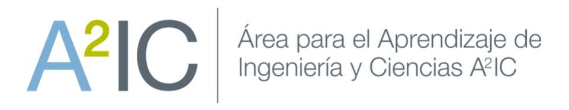

La alta penetración de generación no despachable —solar y eólica— pone la incertidumbre en el centro de la operación. Las decisiones de compromiso deben tomarse antes de conocer la realización de demanda y recurso renovable.
Ola de calor + baja renovable en horas críticas → cortes rotativos.
Tormenta Uri: fallas simultáneas de generación y de gas natural.
Sequía severa redujo la hidroelectricidad → racionamiento.
| Unidad | c | Pmin | Pmax | no-load | partida |
|---|---|---|---|---|---|
| G1 · Carbón base | 20 | 40 | 150 | 100 | 500 |
| G2 · Intermedia | 40 | 20 | 100 | 80 | 300 |
| G3 · Peaker | 70 | 10 | 80 | 50 | 100 |
| ☀ Solar | 0 | — | 150 | — | — |
Antes de modelar la incertidumbre: planteen una restricción de reserva que obligue a la capacidad comprometida a superar la demanda por un margen \(\alpha\). ¿Qué términos entran y para qué períodos se impone?
\(Q(x,\xi_s)\) es el costo óptimo de la 2ª etapa: dado el compromiso \(x\) ya fijado y revelado el escenario \(\xi_s\), se resuelve el despacho de mínimo costo (generación + ENS). El objetivo minimiza el costo de 1ª etapa \(c^{\top}x\) más el valor esperado \(\sum_s\pi_s\,Q(x,\xi_s)\) de ese recurso.
Planteen la formulación estocástica del UC: ¿qué variables llevan índice \(s\) y cuáles no? ¿Cómo cambian la función objetivo y el balance de potencia respecto al caso determinista?
Compromiso: se decide antes de observar \(\xi\). Único para todos los escenarios.
Despacho (recurso): se adapta a la demanda y el sol observados en cada \(s\).
\(u,v,w\) aparecen en las restricciones de todos los escenarios pero no llevan índice \(s\): ése es el acoplamiento que une las dos etapas.
En vez de inventar escenarios a mano, se muestrean \(N\) realizaciones de los factores de demanda y solar desde una distribución conjunta y se resuelve el UC con \(N\) escenarios equiprobables (\(\pi_s = 1/N\)).
\(\rho=-0.5\) — un día nublado tiende a juntar menos sol con más demanda (el caso de estrés).
Estos escenarios no los plantean ustedes: ya vienen construidos en el notebook. Su tarea es entender cómo se generan y su efecto sobre las decisiones.
# UC determinista con reserva R (Gurobi)
def resolver_uc_reserva(D_nom, Sol_nom, reserva):
# variables u,v,w (binarias) y p,ps,ell (>=0)
# objetivo: compromiso + operacion determinista
for t in T:
# >>> BALANCE SOBREDIMENSIONADO POR LA RESERVA <<<
m.addConstr(quicksum(p[g,t] for g in G)
+ ps[t] + ell[t] == (1+reserva)*D_nom[t])
m.optimize()
# UC de dos etapas — N escenarios (Gurobi)
def resolver_uc(D_in, Sol_in, pi_in, fijar_uc=None):
u = m.addVars(G, T, vtype=GRB.BINARY) # SIN s
p = m.addVars(G, T, Sset, lb=0) # CON s
m.setObjective(compromiso + quicksum(
pi_in[s]*operacion[s] for s in Sset)) # costo esperado
for t in T:
for s in Sset: # balance por t,s
m.addConstr(quicksum(p[g,t,s] for g in G)
+ ps[t,s] + ell[t,s] == D_in[s][t])
Implementen ambas funciones. Verifiquen el checklist: binarias sin \(s\), despacho con \(s\), objetivo con costo esperado \(\sum_s\pi_s(\cdot)\), balance \(\forall\,t,s\), demanda y solar indexadas por escenario.
La IA acelera el andamiaje, pero verifiquen: índices de escenario correctos, signo de las desigualdades y que la no-anticipatividad se respete. No deleguen la lógica del modelo. Compartiremos avances al cierre del bloque.
def resolver_uc_reserva(D_nom, Sol_nom, reserva):
m = grb.Model("UC_Reserva")
m.Params.OutputFlag = 0
# variables de compromiso (binarias)
u = m.addVars(G, T, vtype=grb.GRB.BINARY)
v = m.addVars(G, T, vtype=grb.GRB.BINARY)
w = m.addVars(G, T, vtype=grb.GRB.BINARY)
# despacho determinista (>= 0)
p = m.addVars(G, T, lb=0)
ps = m.addVars(T, lb=0)
ell = m.addVars(T, lb=0)
# objetivo: compromiso + operacion
m.setObjective(
grb.quicksum(cnl[g]*u[g,t] + cstart[g]*v[g,t]
for g in G for t in T)
+ grb.quicksum(cvar[g]*p[g,t] for g in G for t in T)
+ grb.quicksum(VOLL*ell[t] for t in T),
grb.GRB.MINIMIZE)
for g in G:
for t in T:
ut_1 = 0 if t == 0 else u[g, t-1]
m.addConstr(u[g,t]-ut_1 == v[g,t]-w[g,t])
m.addConstr(v[g,t] + w[g,t] <= 1)
m.addConstr(p[g,t] >= Pmin[g]*u[g,t])
m.addConstr(p[g,t] <= Pmax[g]*u[g,t])
for t in T:
m.addConstr(ps[t] <= Sol_nom[t])
# >>> RESERVA: balance x (1 + reserva) <<<
if reserva > 0:
m.addConstr(grb.quicksum(p[g,t] for g in G)
+ ps[t] + ell[t] == (1+reserva)*D_nom[t])
else:
m.addConstr(grb.quicksum(p[g,t] for g in G)
+ ps[t] + ell[t] == D_nom[t])
m.optimize()
return u, v, w, p, ps, ell # + obj, status
def resolver_uc(D_in, Sol_in, pi_in, fijar_uc=None):
Sset = list(D_in.keys()) # escenarios
m = grb.Model("UC_estocastico")
m.Params.OutputFlag = 0
# 1a etapa — SIN indice de escenario s
u = m.addVars(G, T, vtype=grb.GRB.BINARY)
v = m.addVars(G, T, vtype=grb.GRB.BINARY)
w = m.addVars(G, T, vtype=grb.GRB.BINARY)
# 2a etapa — CON indice de escenario s
p = m.addVars(G, T, Sset, lb=0)
ps = m.addVars(T, Sset, lb=0)
ell = m.addVars(T, Sset, lb=0)
# objetivo: compromiso + costo ESPERADO
compromiso = grb.quicksum(cnl[g]*u[g,t]
+ cstart[g]*v[g,t] for g in G for t in T)
operacion = grb.quicksum(pi_in[s]*(
grb.quicksum(cvar[g]*p[g,t,s] for g in G for t in T)
+ grb.quicksum(VOLL*ell[t,s] for t in T))
for s in Sset)
m.setObjective(compromiso + operacion, grb.GRB.MINIMIZE)
for g in G:
for t in T:
ut_1 = 0 if t == 0 else u[g, t-1]
m.addConstr(u[g,t]-ut_1 == v[g,t]-w[g,t])
m.addConstr(v[g,t] + w[g,t] <= 1)
for s in Sset: # limites por s
m.addConstr(p[g,t,s] >= Pmin[g]*u[g,t])
m.addConstr(p[g,t,s] <= Pmax[g]*u[g,t])
for t in T:
for s in Sset: # balance por t y s
m.addConstr(ps[t,s] <= Sol_in[s][t])
m.addConstr(grb.quicksum(p[g,t,s] for g in G)
+ ps[t,s] + ell[t,s] == D_in[s][t])
# fijar compromiso comun (evaluacion OOS)
if fijar_uc is not None:
for g in G:
for t in T:
m.addConstr(u[g,t] == fijar_uc[(g,t)])
m.optimize()
return u, v, w, p, ps, ell # + obj, status
Con N=2 la 1ª etapa apenas cubre dos realizaciones (G2 con huecos, G3 casi apagada). Con N=100 el compromiso se robustece: G2 encendida las 24 h y G3 sostiene el pico (h17–21).
Más muestras (o más reserva) → más unidades-hora comprometidas. La capacidad extra es el precio de cubrirse frente a la incertidumbre.
R=0% · base determinista pura: la solar desplaza generación al mediodía y el balance se satisface exacto, sin margen.
Con \(R=20\%\) el despacho se sobredimensiona a \(1{,}2\cdot D\): el área apilada supera la demanda nominal (línea punteada). Esa holgura tiene costo, pero no garantiza cubrir escenarios peores que el margen.
El costo dentro de la muestra con N=2 es engañosamente bajo ($83k): la 1ª etapa se ajusta a sólo dos realizaciones. Al aumentar N, el costo no es necesariamente monótono y con más muestras se acerca a ~$99k.
Un costo in-sample bajo no significa una buena decisión: hay que evaluarla fuera de la muestra (oráculo).
El oráculo conoce el futuro con certeza: para cada escenario resuelve un UC sabiendo exactamente la demanda y el sol → el costo mínimo posible. Es una cota inferior inalcanzable.
Ningún modelo realista puede ser mejor que el oráculo. El mejor compromiso es el que logra el menor gap y poca energía no suministrada esperada.
SAA N=100 queda más cerca del oráculo (gap 9%). El desempeño real se decide fuera de la muestra: aumentar N mejora mucho esta solución, mientras las reservas siguen siendo una regla aproximada.
Distinguir decisiones anticipativas (compromiso) de adaptativas (despacho) permite planificar operaciones robustas, en lugar de optimizar para un único pronóstico que casi nunca se cumple.